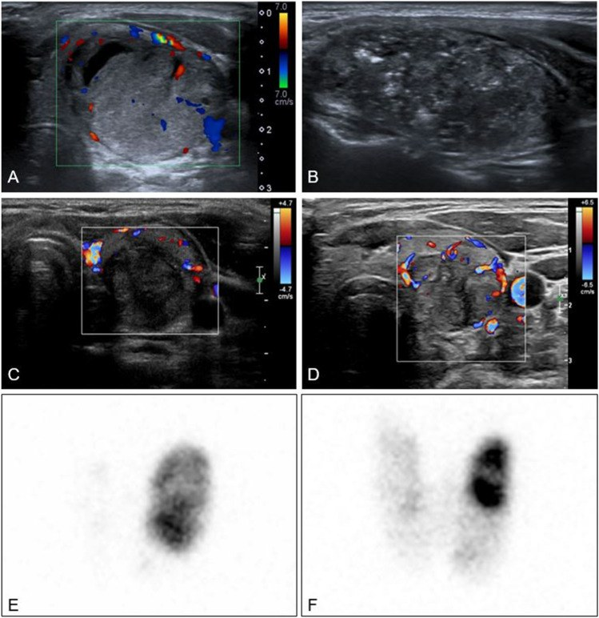
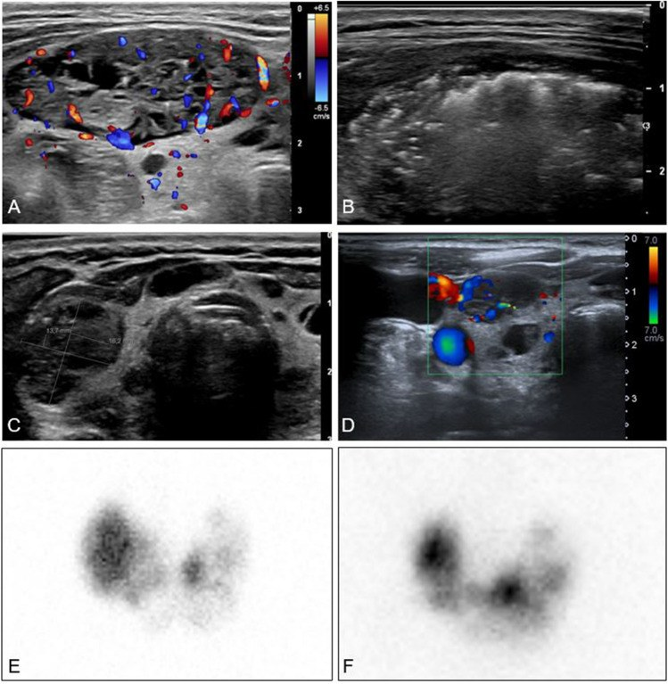

940 — Nhân giáp ĐỘC (toxic adenoma/AFTN): đốt nhiệt RFA–MWA so với I-131 và mổ
Tags: pattern:not vung:tuyen-giap score:ETA-2020 protocol:dot-nhiet-giap protocol:xac-nhan-nhan-nong incidentaloma:nhan-giap
Mức chắc chắn (certainty): tổng hợp y văn (literature synthesis) — biên từ toàn văn các bài mở: đoàn hệ 48 bệnh nhân AFTN (36 nhân độc đơn độc, 12 bướu đa nhân độc) được RFA, Eur J Nucl Med Mol Imaging 2023, PMC10547644 (CC BY 4.0); nghiên cứu tiến cứu 17 AFTN theo dõi 24 tháng, Ther Clin Risk Manag 2022, PMC8747785 (CC BY-NC 3.0); đoàn hệ 883 nhân một lần RFA theo dõi 8 năm, J Clin Endocrinol Metab 2026, PMC13099205 (CC BY 4.0); phân tích 82 bệnh nhân cường giáp có nhân nóng được mổ, 2026, PMC13409719 (CC BY-NC); đồng thuận LATS 2025 về đốt nhiệt tuyến giáp, PMC12662451 (CC BY 4.0); tổng quan RFA nhân độc, 2024, PMC10839704 (CC BY-NC-ND). Không có ca do nhóm tự chụp.
Câu hỏi thực hành: nữ 42 tuổi, tim đập nhanh, sụt 4 kg/3 tháng, run tay; TSH 0,01 mU/L, FT4 28 pmol/L, FT3 9,1 pmol/L; siêu âm một nhân đặc 22 mm thùy trái; xạ hình 99mTc thấy nhân nóng duy nhất, mô giáp còn lại bị ức chế hoàn toàn. Chị hỏi: "Có phải u ác không? Đốt nhiệt có khỏi hẳn không, hay phải uống I-131/mổ?" Bài chốt năm quyết định: (1) nhân nóng KHÔNG đồng nghĩa lành — 8,5% bệnh nhân có nhân nóng được mổ phát hiện ung thư/u tiềm năng ác tính, và 4 ca ung thư thật trong 82 bệnh nhân; (2) RFA chữa khỏi cường giáp ở 72% nhân độc đơn độc sau 1 lần, 81% sau 2 lần — nhưng chỉ 25–33% ở bướu đa nhân độc; (3) hiệu quả phụ thuộc năng lượng: > 2,1 kJ/mL đạt khỏi 91% so với 44% khi đốt ít hơn; (4) I-131 khỏi tương đương nhưng gây suy giáp 10–30% sau 1 năm và 30–60% sau 20 năm; (5) mổ là lựa chọn khi bướu chèn ép, nhân lớn/xâm lấn, nghi ung thư hoặc đốt thất bại — nhưng tới 59% bệnh nhân cần hormon thay thế sau cắt một thùy.
1. Tổng quan bệnh học – cơ chế hình ảnh: vì sao nhân "nóng" gây cường giáp và vì sao đốt nhiệt chữa chậm
- AFTN là gì: nhân giáp tự chủ (autonomously functioning thyroid nodule) sản xuất hormon không phụ thuộc TSH. Đột biến hoạt hóa TSHR hoặc GNAS ở tế bào nang làm tăng cAMP nội bào → tăng biểu hiện NIS (sodium–iodide symporter), tăng bắt iod và tổng hợp T3/T4 liên tục. Hậu quả: TSH bị ức chế, mô giáp lành quanh nhân teo chức năng và không bắt xạ — đây là cơ sở của hình ảnh "nhân nóng + nền lạnh".
- Dịch tễ và ngưỡng: AFTN chiếm 0,9–9% mọi nhân giáp; nhân độc đơn độc (STA) chiếm khoảng 5% nguyên nhân cường giáp, còn bướu đa nhân độc (TMG) khoảng 30% (PMC10547644). Nhân có thể đi từ nhân tiền độc (pre-toxic, TSH thấp nhưng FT4/FT3 bình thường) đến nhiễm độc thật; tốc độ tiến triển thay đổi, nên không phải mọi nhân nóng đều phải điều trị ngay.
- TẠI SAO xạ hình là "chốt" chứ không phải siêu âm: siêu âm chỉ nói hình thái (đặc, giảm âm, có vách, mạch máu); chỉ xạ hình 99mTcO₄⁻ hoặc 123I mới chứng minh chức năng tự chủ: ổ tăng bắt xạ khu trú + ức chế hoàn toàn mô còn lại. Siêu âm không phân biệt được nhân nóng với nhân lạnh — và ung thư tuyến giáp thường lạnh, nhưng nhân nóng vẫn có thể là ung thư (mục 5).
- TẠI SAO RFA diệt được mô tự chủ: dòng điện xoay chiều tần số cao (khoảng 350–500 kHz) đi qua điện cực làm ion trong mô dao động → đốt nóng cục bộ 60–100°C → hoại tử đông (coagulative necrosis) và tắc vi mạch. Vùng đốt không còn tế bào nang sống nên không còn sản xuất hormon; mô giáp lành xung quanh được giữ lại và có thể phục hồi chức năng khi TSH tăng trở lại.
- TẠI SAO siêu âm thấy "tăng âm" trong lúc đốt: nhiệt làm thoát khí và tạo bọt vi mô trong mô → vùng đốt chuyển tăng âm, đây là dấu hiệu dẫn đường cho kỹ thuật moving-shot (rút kim từ đáy lên, quét từng lớp).
- TẠI SAO khỏi chức năng chậm hơn giảm thể tích: mô hoại tử không biến mất ngay; đại thực bào dọn dần trong 6–24 tháng. Vì vậy thời gian trung bình để hết cường giáp là 3,1 tháng ở STA và 6,5 tháng ở TMG; đánh giá "thành công" phải ở 6–12 tháng, không phải 1 tháng (PMC10547644).
- TẠI SAO I-131 gây suy giáp nhiều: đồng vị phóng xạ 131I phát tia beta (quãng chạy khoảng 0,6–2 mm) và tia gamma; tế bào nang bắt iod qua NIS nên cả nhân nóng lẫn mô giáp bị ức chế vẫn nhận liều, đặc biệt khi dùng liều "diệt" đủ lớn. Suy giáp sau I-131 là 10–30% sau 1 năm và 30–60% sau 20 năm (PMC10547644, dẫn ATA).
- Con số nằm lòng của đốt nhiệt (RFA):
- Liều năng lượng: trung vị 2,5 kJ/mL ở STA và 2,8 kJ/mL ở TMG; ngưỡng > 2,1 kJ/mL đạt khỏi 91% so với 44% khi ≤ 2,1 kJ/mL (PMC10547644).
- Giảm thể tích (VRR): 67% (STA) và 74% (TMG) sau 1 năm; trong đoàn hệ 883 nhân, nhân độc giảm 84% / 88% / 89% ở 1 / 3 / 5 năm (PMC13099205); loạt 17 AFTN đạt 95,65% sau 24 tháng (PMC8747785).
- Khỏi cường giáp: 72% STA sau 1 lần RFA (25% TMG); lần 2 nâng 81% STA và 33% TMG; gộp cả nhóm 69% (PMC10547644). Meta-analysis trước đó: 69,9% bình giáp sau 1 hoặc nhiều lần đốt, không có ca suy giáp (dẫn trong PMC10547644).
- Tái phát: 8,3% STA tái cường giáp muộn 24–37 tháng; đoàn hệ 883 nhân: 11,5% nhân độc tái phát, tích lũy 21,6% trong 7 năm; 78% nhân độc đạt kết cục tốt sau một lần RFA (PMC13099205).
- Biến chứng: gộp 2,2%; đoàn hệ 883: 2,3% trung bình, 0,3% nặng; loạt 48 ca: 6,3% chảy máu nhẹ trong thủ thuật, không ca nặng; suy giáp 1/48 (PMC10547644, PMC13099205).
- So sánh trực tiếp I-131 với RFA (hồi cứu): I-131 khỏi 18/25 (72%), RFA khỏi 20/22 (90,9%) sau 1 năm; I-131 có 5 suy giáp + 2 suy giáp dưới lâm sàng, RFA chỉ 2 suy giáp dưới lâm sàng (PMC10547644 dẫn lại; nghiên cứu nhỏ, chưa phải RCT).
- Mổ: cắt một thùy (lobectomy) chữa cường giáp gần như ngay, nhưng tới 59% bệnh nhân vẫn cần hormon thay thế sau cắt một thùy; nguy cơ biến chứng vĩnh viễn < 1%, thay đổi giọng 0,5–4,7% (LATS 2025, PMC12662451).
2. Mẫu hình + chẩn đoán phân biệt theo hình thái và bối cảnh (Gamut)
- Theo số nhân nóng trên xạ hình:
- Một nhân nóng, phần còn lại bị ức chế (STA): chỉ định đốt nhiệt tốt nhất; khỏi 72% sau 1 lần, 81% sau 2 lần.
- Nhiều nhân nóng (TMG): đốt nhiệt kém hiệu quả (25–33%); ưu tiên I-131 hoặc mổ nếu bướu lớn/chèn ép.
- Nhân nóng + nhân lạnh khác: phải đánh giá nhân lạnh bằng FNA vì nguy cơ ung thư nằm ở nhân lạnh; không được chỉ đốt nhân nóng rồi bỏ qua.
- Nhân nóng có ổ lạnh bên trong/không đồng nhất: nghi ung thư trong nhân nóng — không đốt khi chưa loại trừ.
- Theo kích thước (thể tích siêu âm): < 10 mL** — đốt nhiệt thuận lợi, ít biến chứng; **10–30 mL** — vẫn đốt được nhưng cần nhiều năng lượng và có thể cần 2 lần; **> 30 mL — giảm thể tích kém hơn, nguy cơ vỡ nhân cao (đặc biệt > 4,5 cm), cân nhắc mổ/I-131.
- Theo bối cảnh lâm sàng:
- Nữ tuổi sinh sản: RFA tránh phóng xạ và tránh suy giáp suốt đời → lựa chọn hấp dẫn; I-131 cần trì hoãn mang thai 4–6 tháng và gây suy giáp.
- Người cao tuổi có rung nhĩ/loãng xương: kiểm soát cường giáp nhanh bằng ATD trước, rồi RFA/I-131; mổ nếu bướu chèn ép.
- Bướu lớn, chèn ép khí quản, thòng trung thất: mổ là lựa chọn chính; đốt nhiệt không giải quyết được hiệu ứng khối.
- Có thai/cho con bú: chống chỉ định I-131 và RFA chương trình; điều trị bằng ATD liều thấp.
- Chẩn đoán phân biệt của "cường giáp + nhân":
- Basedow (Graves): bắt xạ lan tỏa, có kháng thể TRAb, lồi mắt, phù niêm — không phải nhân nóng đơn độc.
- Viêm giáp bán cấp/hashitoxicosis: bắt xạ thấp, đau cổ (bán cấp), kháng thể TPO/TRAb âm; không đốt.
- Cường giáp do thuốc/iod (Jod–Basedow, amiodaron): bắt xạ thấp hoặc không đồng nhất; hỏi kỹ thuốc và iod cản quang.
- U giả cường giáp (factitious): TSH thấp, FT4 cao, thyroglobulin thấp, không có bướu.
- TSHoma: TSH bình thường hoặc cao kèm FT4 cao; MRI tuyến yên; hiếm.
- Struma ovarii: bắt xạ ổ bụng, hiếm; chỉ nghĩ khi không có bướu cổ.
3. Bảng so sánh phân biệt (ma trận đối chiếu)
| Thực thể (entity) | Hình ảnh/đặc điểm điển hình | Chốt vào (rule-in) | Chốt loại (rule-out) | Gợi ý xác nhận |
|---|---|---|---|---|
| RFA nhân độc | Nhân đặc, giàu mạch; xạ hình nóng đơn độc; đốt → tăng âm trong thủ thuật, giảm thể tích dần | STA < 30 mL + TSH thấp + không chèn ép + nhân lành trên FNA | Nhân > 4,5 cm/thòng trung thất; nghi ung thư; thai; rối loạn đông | Siêu âm Doppler + xạ hình; đốt > 2,1 kJ/mL, khám lại 1–3–6–12 tháng |
| MWA nhân độc | Vùng đốt rộng hơn, ít phụ thuộc hiệu ứng tản nhiệt | Nhân đặc lớn vừa, cần một lần đốt | Sát khí quản/thần kinh quặt ngược; bằng chứng AFTN còn ít hơn RFA | Siêu âm; theo dõi cùng mốc |
| I-131 | Bắt xạ khu trú; tác dụng toàn tuyến, phụ thuộc NIS | Nhân nóng không chèn ép, không có bệnh mắt Basedow hoạt động | Thai/cho bú; bướu lớn chèn ép; suy giáp đã có; bệnh mắt trung bình–nặng | Liều hoạt độ theo thể tích/bắt xạ; TSH sau 6–12 tuần |
| Cắt một thùy (lobectomy) | Nhân đơn độc, thùy còn lại bình thường | Bướu lớn/chèn ép, nghi ung thư, đốt và I-131 thất bại | Nguy cơ mổ cao; suy giáp đã có; bệnh nặng phối hợp | Giải phẫu bệnh; canxi/giọng sau mổ; hormon tới 59% |
| Kháng giáp tổng hợp (ATD) | Không có hình ảnh đặc hiệu; chỉ hạ hormon | Bắc cầu trước can thiệp, cường giáp nhẹ, thai | Không dùng dài hạn (tái phát khi ngừng); agranulocytosis 0,3–0,5%, độc gan | FT4/FT3 + CTM khi sốt/đau họng |

Nhân độc thùy trái 13,9 mL: (A) trước đốt — nhân đặc, mạch máu ngoại vi; (B) trong đốt — vùng tăng âm do bọt khí; (C) 4 tháng — còn 3,9 mL, không còn mạch trong vùng đốt; (D) 2 năm — 4,0 mL, bệnh nhân giữ bình giáp. (E–F) Xạ hình 123I trước và sau: giảm thể tích/độ tự chủ của nhân, mô giáp còn lại bắt xạ trở lại. Nguồn: Eur J Nucl Med Mol Imaging 2023, Fig. 2, PMC10547644, CC BY 4.0 (nguyên bản).4. Protocol đốt nhiệt + hệ phân độ/điểm chuẩn hóa
- Chỉ định theo ETA 2020: xem xét RFA cho nhân độc đơn độc (STA) ở bệnh nhân trẻ, nhân nhỏ, khi không muốn suy giáp suốt đời hoặc không phù hợp I-131/mổ (PMC10547644 dẫn ETA 2020). TMG không phải chỉ định tốt của RFA.
- Kỹ thuật RFA (theo loạt 48 ca): siêu âm dẫn đường, bệnh nhân nằm ngửa, cổ ưỡn; gây tê lidocain 2% dưới da và quanh bao giáp (hydrodissection) để tách khí quản/thần kinh/thực quản; đường vào xuyên eo (trans-isthmic); điện cực làm mát 17–18 G, đầu hoạt động 7–10 mm; kỹ thuật moving-shot; mục tiêu > 2,1 kJ/mL mô nhân (trung vị dùng 2,5 kJ/mL, thời gian đốt trung vị 13 phút).
- Theo dõi: TSH, FT4, FT3 lúc 1–3–6–12 tháng, sau đó mỗi 6–12 tháng; siêu âm thể tích cùng mốc; xạ hình lặp nếu TSH còn bị ức chế sau 12 tháng. Định nghĩa thành công: bình giáp không cần ATD + VRR ≥ 50% ở 6–12 tháng; thất bại → đốt lần 2, I-131 hoặc mổ.
- Xử trí trước đốt: kiểm soát cường giáp bằng ATD (methimazole/carbimazole) + chẹn beta nếu tim nhanh; không cần ngừng ATD ngay trước đốt nhưng phải theo dõi sát; ngừng ATD sau khi TSH bình giáp.
- Chống chỉ định: thai/cho bú; rối loạn đông máu nặng; nhiễm trùng da vùng cổ; liệt dây thanh đối bên; nhân không tiếp cận được; nghi ung thư chưa loại trừ; bướu thòng trung thất.
- Biến chứng cần dự phòng: chảy máu/tụ máu (đè ép 5–10 phút, siêu âm kiểm tra), đau/đau lan tai (giảm liều), thay đổi giọng thoáng qua (0,5–4,7%), vỡ nhân (nguy cơ tăng khi nhân > 4,5 cm), cường giáp thoáng qua do viêm giáp (theo dõi 2–4 tuần), suy giáp (hiếm, 1/48 trong loạt trên).
- Sơ đồ quyết định:
flowchart TD
A[Nhân nóng + TSH thấp] --> B{Xạ hình: một nhân hay nhiều nhân?}
B -->|Một nhân| C{Kích thước và chèn ép?}
B -->|Nhiều nhân TMG| D{Chèn ép / bướu lớn?}
C -->|Nhỏ hơn 30 mL, không chèn ép| E[Ưu tiên RFA nếu đủ điều kiện]
C -->|Lớn hơn 30 mL hoặc chèn ép| F[Mổ hoặc I-131]
D -->|Có| F
D -->|Không| G[I-131 hoặc ATD bắc cầu]
E --> H[Đốt > 2,1 kJ/mL; khám 1-3-6-12 tháng]
H --> I{TSH bình giáp sau 12 tháng?}
I -->|Có| J[Theo dõi mỗi 6-12 tháng]
I -->|Không| K[Đốt lần 2 / I-131 / mổ]
5. Biến thể bình thường và cạm bẫy
- Cạm bẫy số 1 — "nhân nóng là lành": trong 82 bệnh nhân cường giáp có nhân nóng, 25 người được mổ; 7/25 (28,0%) có ung thư hoặc u tiềm năng ác tính (UMP), trong đó 4 ung thư thật; tính trên toàn bộ 82 người, tỉ lệ quan sát 8,5%. U trong nhân nóng lớn hơn (5,0 ± 2,8 cm so với 0,8 ± 0,7 cm) và thường có hình mô học dạng nang (85,7% so với 27,3%; RR 3,14) (PMC13409719). Vì vậy: nhân nóng vẫn phải FNA nếu siêu âm có đặc điểm nghi ngờ, và không đốt mù khi chưa loại trừ.
- Cạm bẫy số 2 — TIRADS kém giá trị ở nhân nóng: các dấu hiệu TIRADS được xây trên nhân chưa chọn lọc chức năng; trong nhân tự chủ, nguy cơ "FNAC không cần thiết" do TIRADS thấp, nhưng không được dùng TIRADS để bỏ qua đánh giá mô học khi có nốt cứng, vôi hóa vi mô, bờ xâm lấn (PMC11301566).
- Cạm bẫy số 3 — TMG trông giống STA: nếu xạ hình chỉ thấy "một ổ nóng" nhưng tuyến giáp có nhiều nhân trên siêu âm, đừng hứa khỏi 72%; TMG chỉ khỏi 25–33% sau RFA (PMC10547644).
- Cạm bẫy số 4 — cường giáp thoáng qua sau đốt: do mô hoại tử giải phóng hormon; phân biệt với đốt thất bại bằng thời gian (thường 2–4 tuần rồi giảm) và FT3/FT4; không vội đốt lại.
- Cạm bẫy số 5 — vỡ nhân: đau đột ngột, sưng, có thể sốt; nguy cơ cao khi nhân > 4,5 cm; xử trí bảo tồn (giảm đau, kháng sinh nếu nhiễm), hiếm khi cần mổ.
- Cạm bẫy số 6 — I-131 ở bệnh mắt: bệnh mắt Basedow hoạt động trung bình–nặng là chống chỉ định tương đối; ở nhân độc đơn thuần ít ảnh hưởng mắt hơn, nhưng vẫn phải hỏi và khám mắt trước.
- Cạm bẫy số 7 — bỏ sót suy giáp: sau RFA hiếm, nhưng sau I-131 và sau mổ thì thường; kiểm tra TSH ở mọi lần khám, không chỉ FT4.
- Biến thể bình thường: nhân nóng không độc (pre-toxic) có thể theo dõi nếu TSH còn bình thường và không triệu chứng; nhân nóng nhỏ < 1 cm hiếm khi gây cường giáp thật; bướu đa nhân có thể có vùng bắt xạ không đồng nhất, không phải "nhiều nhân độc" nếu TSH bình thường.
6. Tự lượng giá — Blind Quiz
Ca 1 — Nữ 48 tuổi, sụt cân, tim nhanh, một nhân thùy trái. Nhìn ảnh trước khi đọc đáp án.
- Gợi ý: TSH 0,01 mU/L, FT4 26 pmol/L; xạ hình 99mTc: một ổ nóng thùy trái, mô còn lại mờ.
- Hỏi: (1) mô giáp còn lại vì sao mờ? (2) ba lựa chọn điều trị và tiêu chí chọn? (3) ảnh B và C cho biết gì?
Bấm để hiện đáp án (findings + chẩn đoán)
- Findings: (A) nhân đặc 13,9 mL, mạch máu ngoại vi; (B) trong đốt, vùng tăng âm do bọt khí — dấu hiệu mô đang bị đốt; (C) 4 tháng sau, còn 3,9 mL, không còn mạch trong vùng đốt; (D) 2 năm, 4,0 mL, bình giáp. Xạ hình (E→F): nhân nóng giảm độ tự chủ, mô giáp còn lại bắt xạ trở lại.
- Chẩn đoán: nhân độc đơn độc (STA) — TSH bị ức chế làm mô lành không bắt xạ; RFA tiêu diệt mô tự chủ, sau đó TSH tăng và mô lành phục hồi.
- Chọn lựa: RFA hợp lý vì **STA < 30 mL**, không chèn ép, bệnh nhân không muốn suy giáp suốt đời; nếu nhân > 30 mL/chèn ép → mổ hoặc I-131.
- Nguồn ảnh: Eur J Nucl Med Mol Imaging 2023, Fig. 2, PMC10547644, CC BY 4.0.
Ca 2 — Nam 62 tuổi, bướu đa nhân, tim nhanh, TSH 0,02 mU/L. Đốt một nhân lớn nhất.

- Gợi ý: nhiều nhân hai thùy, nhân đích 8,9 mL; sau đốt 1 năm còn 1,1 mL nhưng TSH chỉ 0,24 mU/L.
- Hỏi: vì sao thể tích giảm nhiều mà TSH vẫn thấp? Chiến lược tiếp theo?
Bấm để hiện đáp án (findings + chẩn đoán)
- Findings: (A) nhân giàu mạch 8,9 mL; (B) tăng âm trong đốt; (C) 4 tháng 2 mL, TSH 0,24 mU/L; (D) 1 năm 1,1 mL, còn mạch ngoại vi; xạ hình còn bắt xạ không đồng nhất.
- Chẩn đoán: bướu đa nhân độc (TMG) — đốt một nhân không kiểm soát được các nhân tự chủ khác; khỏi chỉ 25% sau 1 lần, 33% sau 2 lần (PMC10547644).
- Chiến lược: nếu còn cường giáp có triệu chứng → I-131 hoặc mổ; nếu TSH thấp nhưng FT4/FT3 bình thường và không triệu chứng → theo dõi.
- Nguồn ảnh: Eur J Nucl Med Mol Imaging 2023, Fig. 3, PMC10547644, CC BY 4.0.
Bài liên quan chéo
- 1629 — Đốt nhiệt nhân giáp lành tính đặc: RFA & MWA (kỹ thuật, IAR, biến chứng)
- 1622 — Đốt cồn nang giáp (PEI) (nhân nang, không phải nhân độc)
- 230 — Tuyến giáp và hạch cổ (giải phẫu, hạch, FNA)
Không dùng để chẩn đoán độc lập khi chưa có người hướng dẫn.